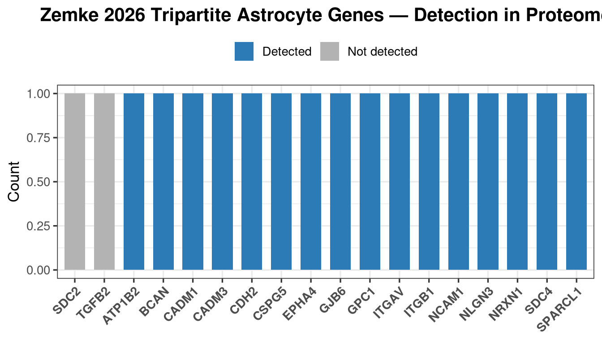
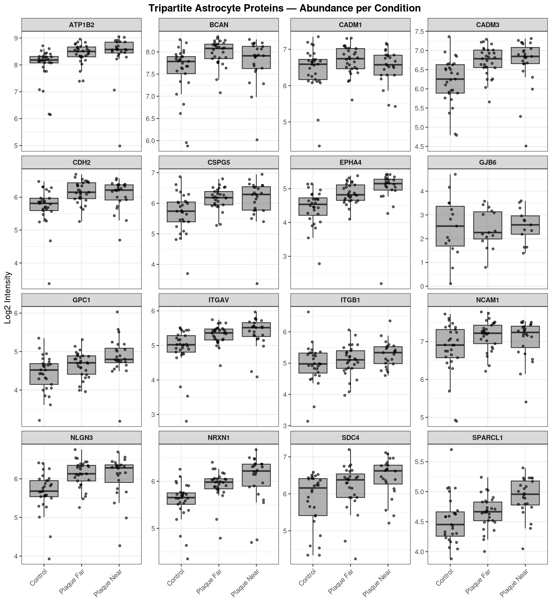
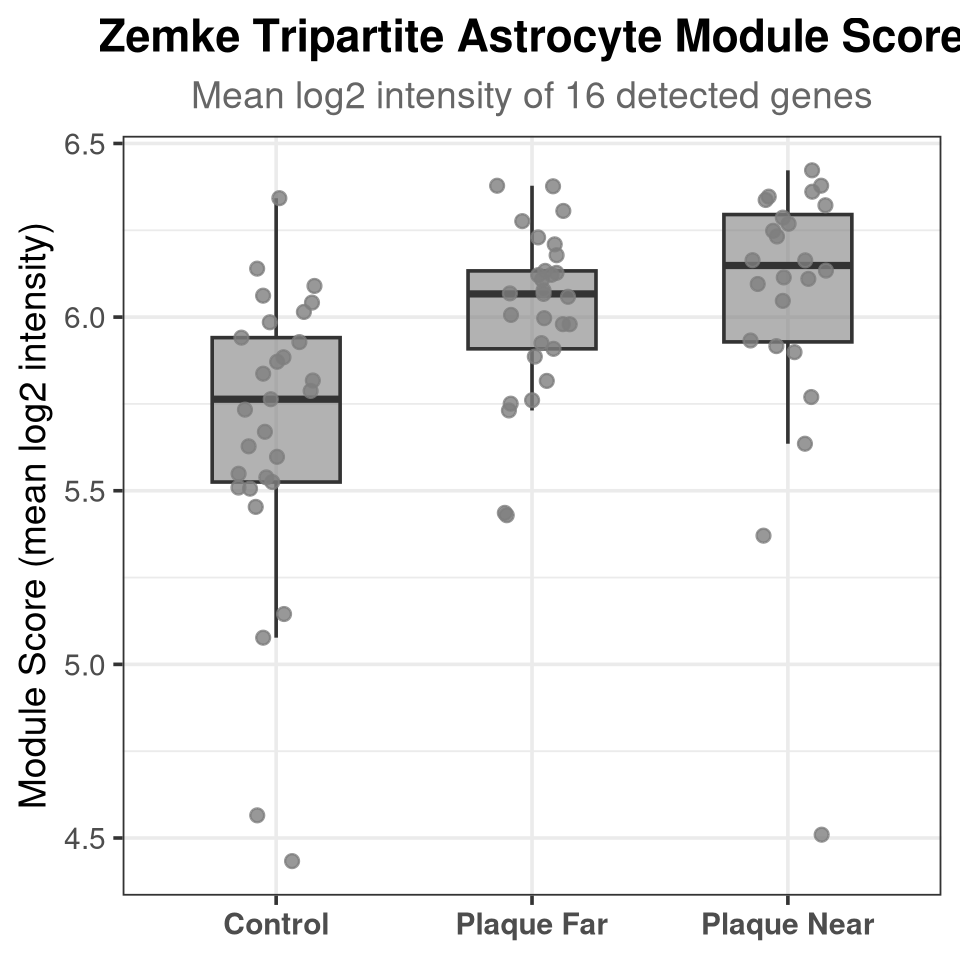
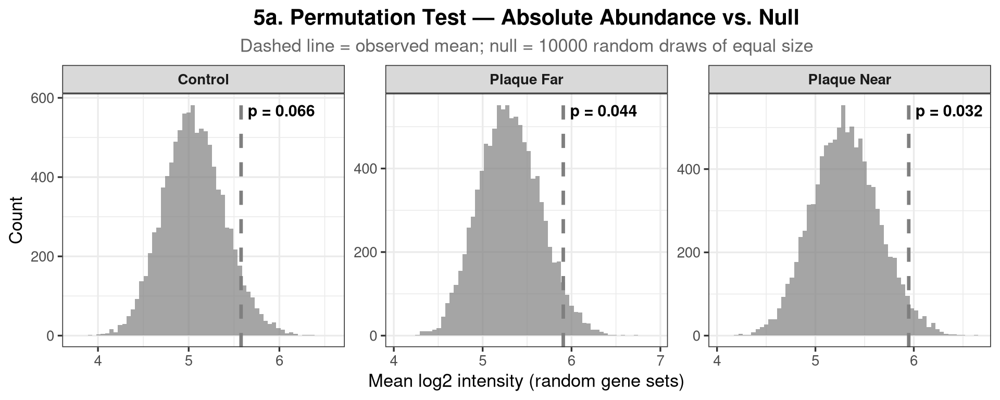
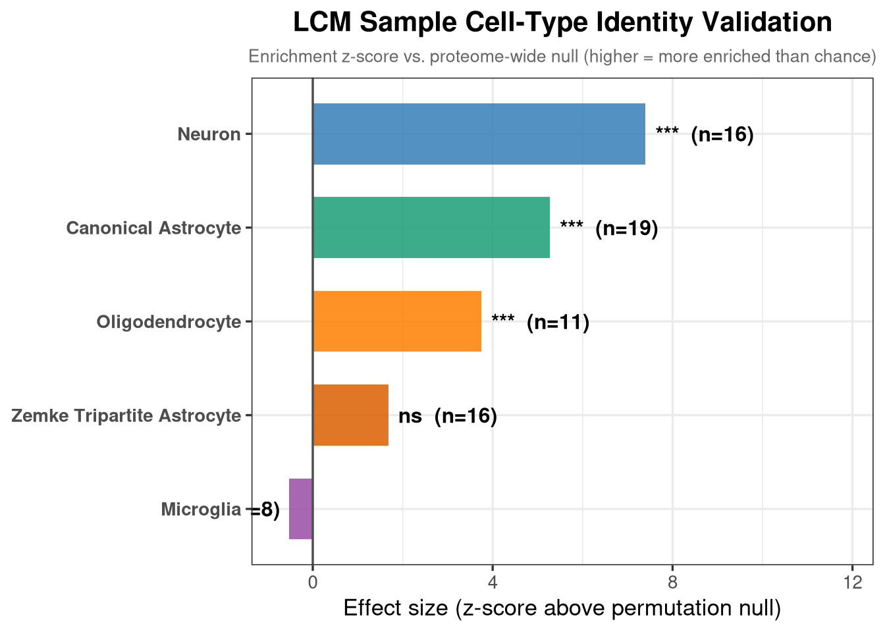
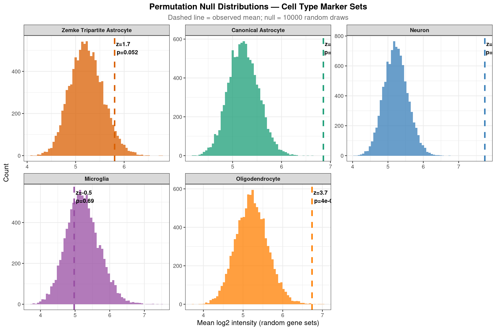
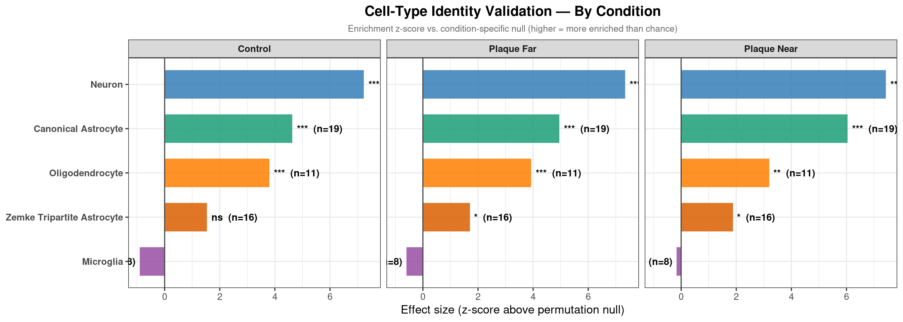
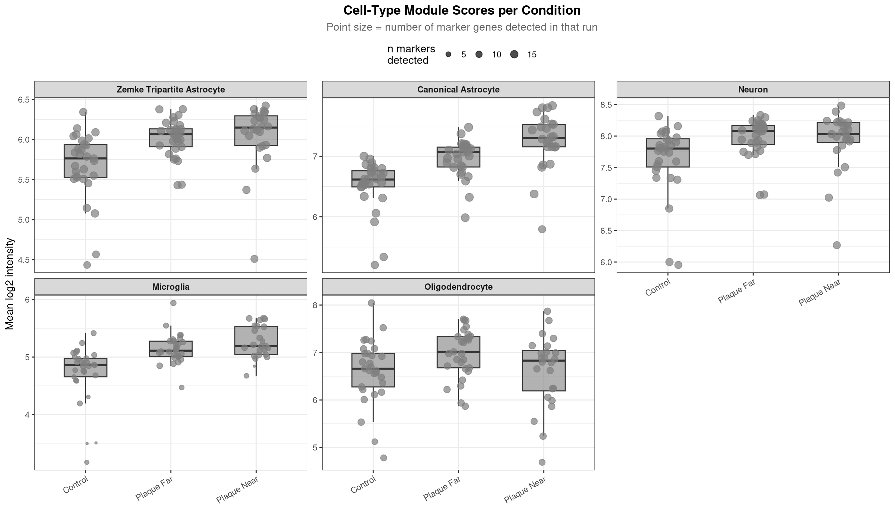
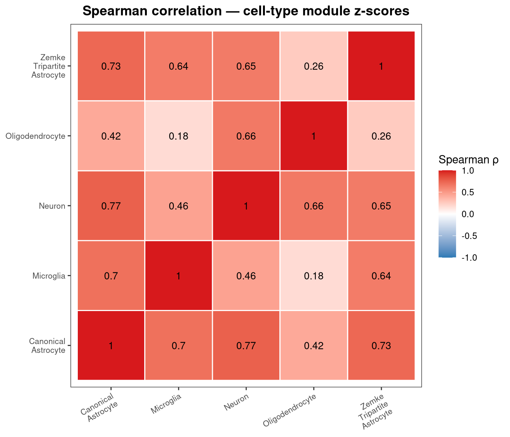

Code
suppressPackageStartupMessages({
library(data.table)
library(qs2)
library(dplyr)
library(tidyr)
library(tibble)
library(ggplot2)
library(ggrepel)
library(stringr)
library(glue)
})This notebook evaluates whether the LCM proteomics data contains an enriched tripartite astrocyte signature, using the 18-gene module from Zemke et al. (2026). The same genes were used in that study with Seurat’s AddModuleScore to identify putative tripartite astrocyte clusters. Here we ask whether these proteins are detected, whether their aggregate abundance is higher than expected by chance, and how the sample cell-type composition varies across conditions.
suppressPackageStartupMessages({
library(data.table)
library(qs2)
library(dplyr)
library(tidyr)
library(tibble)
library(ggplot2)
library(ggrepel)
library(stringr)
library(glue)
})base_dir <- "/nemo/lab/destrooperb/home/shared/zanettc/millie_proteomics"
run_num <- "run5"
results_dir <- file.path(base_dir, "results", run_num)
objects_dir <- file.path(base_dir, "data", "processed", run_num)
dir.create(file.path(results_dir, "Tripartite_Astrocyte"), recursive = TRUE, showWarnings = FALSE)
out_dir <- file.path(results_dir, "Tripartite_Astrocyte")
# Zemke et al. 2026 — 18 tripartite synaptic genes as reported (human HGNC symbols)
zemke_genes_human <- c(
"NRXN1", "NLGN3", "ITGB1", "ITGAV", "CDH2",
"CADM3", "CADM1", "NCAM1", "TGFB2", "ATP1B2",
"EPHA4", "GJB6", "BCAN", "CSPG5", "SPARCL1",
"SDC2", "SDC4", "GPC1"
)
# Convert to mouse MGI symbols (title case; all 18 have verified 1:1 mouse orthologs
# with identical names differing only in capitalisation — confirmed via Ensembl BioMart)
zemke_genes_mouse <- paste0(
toupper(substr(zemke_genes_human, 1, 1)),
tolower(substr(zemke_genes_human, 2, nchar(zemke_genes_human)))
)
# Uppercase versions used for case-insensitive matching against the proteomics dictionary
zemke_genes <- toupper(zemke_genes_mouse)
cat("Mouse gene symbols:\n", paste(zemke_genes_mouse, collapse = ", "), "\n")Mouse gene symbols:
Nrxn1, Nlgn3, Itgb1, Itgav, Cdh2, Cadm3, Cadm1, Ncam1, Tgfb2, Atp1b2, Epha4, Gjb6, Bcan, Cspg5, Sparcl1, Sdc2, Sdc4, Gpc1 # Condition display order and colours (consistent with the rest of the project)
cond_levels <- c("control", "plaque_far", "plaque_near")
cond_labels <- c("Control", "Plaque Far", "Plaque Near")
cond_cols <- c("control" = "#1b9e77", "plaque_far" = "#7570b3", "plaque_near" = "#d95f02")# Protein dictionary
protein_dict <- fread(file.path(base_dir, "data/processed/run1/clean_spec_raw.csv")) %>%
dplyr::select(Protein = PG.ProteinGroups,
Gene = PG.Genes,
Description = PG.ProteinDescriptions) %>%
distinct()
# MSstats summarised protein-level abundances (ProteinLevelData)
processed_data <- qs_read(file.path(objects_dir, "processed_msstats_data.qs2"))How many of the 18 Zemke genes are quantified in the proteome?
# All detected genes (uppercase)
detected_genes <- protein_dict %>%
filter(!is.na(Gene) & Gene != "") %>%
mutate(Gene_upper = toupper(Gene)) %>%
pull(Gene_upper) %>%
unique()
detected_zemke <- zemke_genes[zemke_genes %in% detected_genes]
missing_zemke <- zemke_genes[!zemke_genes %in% detected_genes]
cat(glue("Detected : {length(detected_zemke)} / {length(zemke_genes)}\n"))Detected : 16 / 18cat("Detected genes :", paste(detected_zemke, collapse = ", "), "\n")Detected genes : NRXN1, NLGN3, ITGB1, ITGAV, CDH2, CADM3, CADM1, NCAM1, ATP1B2, EPHA4, GJB6, BCAN, CSPG5, SPARCL1, SDC4, GPC1 cat("Missing genes :", paste(missing_zemke, collapse = ", "), "\n")Missing genes : TGFB2, SDC2 det_df <- data.frame(
Gene = zemke_genes,
Status = ifelse(zemke_genes %in% detected_genes, "Detected", "Not detected")
)
ggplot(det_df, aes(x = reorder(Gene, Status == "Detected"), fill = Status)) +
geom_bar(width = 0.7) +
scale_fill_manual(values = c("Detected" = "#2c7bb6", "Not detected" = "grey70")) +
labs(title = "Zemke 2026 Tripartite Astrocyte Genes — Detection in Proteome",
x = NULL, y = "Count", fill = NULL) +
theme_bw(base_size = 13) +
theme(axis.text.x = element_text(angle = 45, hjust = 1, face = "bold"),
plot.title = element_text(hjust = 0.5, face = "bold"),
legend.position = "top")
ggsave(file.path(out_dir, "Detection_Summary.pdf"), width = 8, height = 4)Warning in grid.Call.graphics(C_text, as.graphicsAnnot(x$label), x$x, x$y, :
for 'Zemke 2026 Tripartite Astrocyte Genes — Detection in Proteome' in
'mbcsToSbcs': - substituted for — (U+2014)Boxplots for each detected tripartite gene, coloured by Condition (as in notebook 01b).
# Build long-format abundance data for detected tripartite genes
tripartite_long <- processed_data$ProteinLevelData %>%
rename(Condition = GROUP) %>%
left_join(protein_dict, by = "Protein") %>%
filter(!is.na(Gene) & Gene != "") %>%
mutate(Gene_upper = toupper(Gene)) %>%
filter(Gene_upper %in% detected_zemke) %>%
mutate(Gene_upper = factor(Gene_upper, levels = sort(detected_zemke))) %>%
mutate(Condition = factor(Condition, levels = cond_levels, labels = cond_labels))
p_boxes <- ggplot(tripartite_long,
aes(x = Condition, y = LogIntensities, fill = Condition)) +
geom_boxplot(outlier.shape = NA, alpha = 0.6) +
geom_jitter(width = 0.2, size = 1.2, alpha = 0.6) +
facet_wrap(~ Gene_upper, scales = "free_y") +
scale_fill_manual(values = c(
"Control" = cond_cols["control"],
"Plaque Far" = cond_cols["plaque_far"],
"Plaque Near" = cond_cols["plaque_near"]
)) +
labs(title = "Tripartite Astrocyte Proteins — Abundance per Condition",
x = NULL, y = "Log2 Intensity", fill = "Condition") +
theme_bw(base_size = 12) +
theme(axis.text.x = element_text(angle = 45, hjust = 1),
strip.text = element_text(face = "bold"),
plot.title = element_text(hjust = 0.5, face = "bold"),
legend.position = "top")
print(p_boxes)Warning: No shared levels found between `names(values)` of the manual scale and the
data's fill values.
No shared levels found between `names(values)` of the manual scale and the
data's fill values.
No shared levels found between `names(values)` of the manual scale and the
data's fill values.
dyn_h <- 3 * ceiling(length(detected_zemke) / 4)
ggsave(file.path(out_dir, "Individual_Protein_Boxplots.pdf"),
plot = p_boxes, width = 11, height = dyn_h, limitsize = FALSE)Warning: No shared levels found between `names(values)` of the manual scale and the
data's fill values.
No shared levels found between `names(values)` of the manual scale and the
data's fill values.
No shared levels found between `names(values)` of the manual scale and the
data's fill values.Warning in grid.Call.graphics(C_text, as.graphicsAnnot(x$label), x$x, x$y, :
for 'Tripartite Astrocyte Proteins — Abundance per Condition' in 'mbcsToSbcs':
- substituted for — (U+2014)Average log-intensity of detected tripartite genes per run, compared across conditions. Runs with fewer than 3 detected genes are excluded.
module_scores <- processed_data$ProteinLevelData %>%
rename(Condition = GROUP) %>%
left_join(protein_dict, by = "Protein") %>%
filter(!is.na(Gene) & Gene != "") %>%
mutate(Gene_upper = toupper(Gene)) %>%
filter(Gene_upper %in% detected_zemke) %>%
group_by(originalRUN, Condition) %>%
summarise(
module_score = mean(LogIntensities, na.rm = TRUE),
n_genes_used = sum(!is.na(LogIntensities)),
.groups = "drop"
) %>%
filter(n_genes_used >= 3) %>%
mutate(Condition = factor(Condition, levels = cond_levels, labels = cond_labels))
module_scoresp_module <- ggplot(module_scores, aes(x = Condition, y = module_score, fill = Condition)) +
geom_boxplot(outlier.shape = NA, alpha = 0.6, width = 0.5) +
geom_jitter(aes(color = Condition), width = 0.15, size = 2, alpha = 0.8) +
scale_fill_manual(values = c("Control" = cond_cols["control"],
"Plaque Far" = cond_cols["plaque_far"],
"Plaque Near" = cond_cols["plaque_near"])) +
scale_color_manual(values = c("Control" = cond_cols["control"],
"Plaque Far" = cond_cols["plaque_far"],
"Plaque Near" = cond_cols["plaque_near"])) +
labs(title = "Zemke Tripartite Astrocyte Module Score",
subtitle = glue("Mean log2 intensity of {length(detected_zemke)} detected genes"),
x = NULL, y = "Module Score (mean log2 intensity)") +
theme_bw(base_size = 14) +
theme(legend.position = "none",
plot.title = element_text(hjust = 0.5, face = "bold"),
plot.subtitle = element_text(hjust = 0.5, color = "grey40"),
axis.text.x = element_text(face = "bold"))
print(p_module)Warning: No shared levels found between `names(values)` of the manual scale and the
data's fill values.Warning: No shared levels found between `names(values)` of the manual scale and the
data's colour values.Warning: No shared levels found between `names(values)` of the manual scale and the
data's fill values.
No shared levels found between `names(values)` of the manual scale and the
data's fill values.Warning: No shared levels found between `names(values)` of the manual scale and the
data's colour values.
ggsave(file.path(out_dir, "Module_Score_Boxplot.pdf"), plot = p_module, width = 5, height = 5)Warning: No shared levels found between `names(values)` of the manual scale and the
data's fill values.
No shared levels found between `names(values)` of the manual scale and the
data's colour values.Warning: No shared levels found between `names(values)` of the manual scale and the
data's fill values.
No shared levels found between `names(values)` of the manual scale and the
data's fill values.Warning: No shared levels found between `names(values)` of the manual scale and the
data's colour values.Tests whether the tripartite gene set has higher absolute protein levels than would be expected if you picked the same number of proteins at random from the full proteome. For each condition the observed mean log-intensity of the detected tripartite genes is compared to a null distribution from 10,000 random draws of equal size. A complementary two-sample Wilcoxon rank-sum test (tripartite vs. all other proteins) is also reported.
set.seed(42)
n_perm <- 10000
# Condition-level mean abundance per protein (average across runs within condition)
protein_means_per_cond <- processed_data$ProteinLevelData %>%
rename(Condition = GROUP) %>%
left_join(protein_dict, by = "Protein") %>%
filter(!is.na(Gene) & Gene != "") %>%
mutate(Gene_upper = toupper(Gene)) %>%
group_by(Condition, Gene_upper) %>%
summarise(mean_abundance = mean(LogIntensities, na.rm = TRUE), .groups = "drop") %>%
filter(!is.nan(mean_abundance))
perm_results_abund <- purrr::map_dfr(cond_levels, function(cond) {
cond_data <- protein_means_per_cond %>% filter(Condition == cond)
all_abund <- cond_data$mean_abundance
gene_names <- cond_data$Gene_upper
detected_in_cond <- intersect(detected_zemke, gene_names)
n_detected <- length(detected_in_cond)
if (n_detected < 3) {
message(glue("Skipping {cond}: fewer than 3 tripartite genes detected"))
return(NULL)
}
observed_mean <- mean(all_abund[gene_names %in% detected_in_cond], na.rm = TRUE)
null_dist <- replicate(n_perm, mean(sample(all_abund, n_detected, replace = FALSE)))
emp_pval <- mean(null_dist >= observed_mean)
# Two-sample Wilcoxon: tripartite vs. rest of proteome
tripartite_abund <- all_abund[gene_names %in% detected_in_cond]
rest_abund <- all_abund[!(gene_names %in% detected_in_cond)]
wx <- wilcox.test(tripartite_abund, rest_abund, alternative = "greater")
tibble(
Condition = cond,
n_genes = n_detected,
observed_mean = observed_mean,
null_mean = mean(null_dist),
null_sd = sd(null_dist),
perm_pval = emp_pval,
wilcox_pval = wx$p.value,
null_dist = list(null_dist)
)
})
perm_results_abund %>%
dplyr::select(-null_dist) %>%
mutate(across(where(is.numeric), ~ round(.x, 4)))plot_data_abund <- perm_results_abund %>%
tidyr::unnest(null_dist) %>%
mutate(Condition = factor(Condition, levels = cond_levels, labels = cond_labels))
obs_data_abund <- perm_results_abund %>%
mutate(Condition = factor(Condition, levels = cond_levels, labels = cond_labels))
p_perm_abund <- ggplot(plot_data_abund, aes(x = null_dist, fill = Condition)) +
geom_histogram(bins = 60, alpha = 0.7, color = NA) +
geom_vline(data = obs_data_abund,
aes(xintercept = observed_mean, color = Condition),
linewidth = 1.2, linetype = "dashed") +
geom_text(data = obs_data_abund,
aes(x = observed_mean, y = Inf,
label = glue("p = {signif(perm_pval, 2)}")),
vjust = 2, hjust = -0.1, size = 4, fontface = "bold") +
facet_wrap(~ Condition, scales = "free") +
scale_fill_manual(values = c("Control" = cond_cols["control"],
"Plaque Far" = cond_cols["plaque_far"],
"Plaque Near" = cond_cols["plaque_near"])) +
scale_color_manual(values = c("Control" = cond_cols["control"],
"Plaque Far" = cond_cols["plaque_far"],
"Plaque Near" = cond_cols["plaque_near"])) +
labs(title = "5a. Permutation Test — Absolute Abundance vs. Null",
subtitle = glue("Dashed line = observed mean; null = {n_perm} random draws of equal size"),
x = "Mean log2 intensity (random gene sets)", y = "Count") +
theme_bw(base_size = 13) +
theme(legend.position = "none",
plot.title = element_text(hjust = 0.5, face = "bold"),
plot.subtitle = element_text(hjust = 0.5, color = "grey40"),
strip.text = element_text(face = "bold"))
print(p_perm_abund)Warning: No shared levels found between `names(values)` of the manual scale and the
data's fill values.Warning: No shared levels found between `names(values)` of the manual scale and the
data's colour values.Warning: No shared levels found between `names(values)` of the manual scale and the
data's fill values.Warning: No shared levels found between `names(values)` of the manual scale and the
data's colour values.Warning: No shared levels found between `names(values)` of the manual scale and the
data's fill values.
ggsave(file.path(out_dir, "5a_Permutation_Absolute_Abundance.pdf"),
plot = p_perm_abund, width = 10, height = 4)Warning: No shared levels found between `names(values)` of the manual scale and the
data's fill values.Warning: No shared levels found between `names(values)` of the manual scale and the
data's colour values.Warning: No shared levels found between `names(values)` of the manual scale and the
data's fill values.Warning: No shared levels found between `names(values)` of the manual scale and the
data's colour values.Warning: No shared levels found between `names(values)` of the manual scale and the
data's fill values.Warning in grid.Call.graphics(C_text, as.graphicsAnnot(x$label), x$x, x$y, :
for '5a. Permutation Test — Absolute Abundance vs. Null' in 'mbcsToSbcs': -
substituted for — (U+2014)perm_results_abund %>%
dplyr::select(-null_dist) %>%
mutate(
Condition = factor(Condition, levels = cond_levels, labels = cond_labels),
perm_pval_adj = p.adjust(perm_pval, method = "BH"),
wilcox_pval_adj = p.adjust(wilcox_pval, method = "BH")
) %>%
mutate(across(where(is.numeric), ~ round(.x, 4)))To validate that the LCM samples are genuinely astrocyte-enriched, the same permutation test from section 5a is run across five cell-type marker sets simultaneously. The prediction is that astrocyte marker sets (canonical astrocyte + Zemke tripartite) should have significantly higher-than-chance abundance in the proteome, while neuronal, microglial, and oligodendrocyte marker sets should not. A significant result for non-astrocyte sets would indicate contamination from those cell types.
Marker sources: - Canonical astrocyte: Sharma et al. 2015 (Nat Neurosci 18:1819) — SILAC-MS cell-type resolved mouse brain proteome; top proteins enriched >2-fold in astrocytes over neurons, oligodendrocytes and microglia. This is the primary proteomic reference for this context. Boisvert et al. 2018 (Cell Reports 22:1964) — Ribo-Tag MS from mouse astrocytes in vivo (translated proteome) provides additional validation for the core set. - Neurons, microglia, oligodendrocytes: Sharma et al. 2015 (same study); consensus from Zeisel et al. 2018 and standard immunomarker literature
cell_type_markers <- list(
"Zemke_Tripartite_Astrocyte" = toupper(zemke_genes_mouse),
# Sharma et al. 2015 (Nat Neurosci 18:1819) SILAC-MS; top astrocyte-enriched proteins
# confirmed in Boisvert et al. 2018 (Cell Reports 22:1964) Ribo-Tag MS
"Canonical_Astrocyte" = toupper(c(
"Aldh1l1", "Gfap", "Aqp4", "Glul", "Gja1",
"Atp1a2", "Mfge8", "Ndrg2", "Clu", "Slc1a2",
"Slc1a3", "Kcnj10", "Slc4a4", "Aldoc", "Ddah1",
"Ezr", "Vim", "S100b", "Apoe"
)),
"Neuron" = toupper(c(
"Tubb3", "Snap25", "Stmn2", "Eno2", "Syn1",
"Rbfox3", "Map2", "Nefh", "Nefl", "Nefm",
"Syt1", "Sv2b", "Gpm6a", "Dlg4", "Camk2a", "Atp1b1"
)),
"Microglia" = toupper(c(
"Aif1", "Csf1r", "Cx3cr1", "Tmem119", "P2ry12",
"Trem2", "Tyrobp", "C1qa", "C1qb", "C1qc",
"Hexb", "Cd68", "Itgam", "Siglech", "Fcrls"
)),
"Oligodendrocyte" = toupper(c(
"Mbp", "Plp1", "Mog", "Cnp", "Mag",
"Mobp", "Sox10", "Mal", "Cldn11", "Gjb1",
"Ermn", "Opalin", "Fa2h", "Ndrg1", "Aspa"
))
)
# Colour palette for cell types
ct_cols <- c(
"Zemke_Tripartite_Astrocyte" = "#d95f02",
"Canonical_Astrocyte" = "#1b9e77",
"Neuron" = "#377eb8",
"Microglia" = "#984ea3",
"Oligodendrocyte" = "#ff7f00"
)detection_summary <- purrr::map_dfr(names(cell_type_markers), function(ct) {
genes <- cell_type_markers[[ct]]
detected <- sum(genes %in% detected_genes)
tibble(
Cell_type = ct,
n_in_set = length(genes),
n_detected = detected,
pct_detected = round(100 * detected / length(genes), 1)
)
})
detection_summaryPerformed on the full proteome (all conditions pooled) to give the most powered estimate of whether each cell-type marker set is broadly enriched in these LCM samples.
# Proteome-wide mean abundance per protein (pooled across all conditions)
protein_means_all <- processed_data$ProteinLevelData %>%
left_join(protein_dict, by = "Protein") %>%
filter(!is.na(Gene) & Gene != "") %>%
mutate(Gene_upper = toupper(Gene)) %>%
group_by(Gene_upper) %>%
summarise(mean_abundance = mean(LogIntensities, na.rm = TRUE), .groups = "drop") %>%
filter(!is.nan(mean_abundance))
all_abund_pooled <- protein_means_all$mean_abundance
all_genes_pooled <- protein_means_all$Gene_upper
set.seed(42)
ct_perm_results <- purrr::map_dfr(names(cell_type_markers), function(ct) {
genes_in_set <- cell_type_markers[[ct]]
detected_in_set <- intersect(genes_in_set, all_genes_pooled)
n_det <- length(detected_in_set)
if (n_det < 3) {
message(glue("Skipping {ct}: fewer than 3 genes detected"))
return(NULL)
}
observed_mean <- mean(all_abund_pooled[all_genes_pooled %in% detected_in_set])
null_dist <- replicate(n_perm,
mean(sample(all_abund_pooled, n_det, replace = FALSE)))
emp_pval <- mean(null_dist >= observed_mean)
# Effect size: how many SDs above the null mean (z-score equivalent)
effect_size <- (observed_mean - mean(null_dist)) / sd(null_dist)
# Two-sample Wilcoxon: this cell type vs. all other proteins
target_abund <- all_abund_pooled[all_genes_pooled %in% detected_in_set]
rest_abund <- all_abund_pooled[!(all_genes_pooled %in% detected_in_set)]
wx <- wilcox.test(target_abund, rest_abund, alternative = "greater")
tibble(
Cell_type = ct,
n_detected = n_det,
observed_mean = observed_mean,
null_mean = mean(null_dist),
null_sd = sd(null_dist),
effect_size_z = effect_size,
perm_pval = emp_pval,
wilcox_pval = wx$p.value,
null_dist = list(null_dist)
)
})
ct_perm_results %>%
dplyr::select(-null_dist) %>%
mutate(
perm_pval_adj = p.adjust(perm_pval, method = "BH"),
wilcox_pval_adj = p.adjust(wilcox_pval, method = "BH")
) %>%
mutate(across(where(is.numeric), ~ round(.x, 4)))The effect size (z-score) represents how many standard deviations above the permutation null the observed mean sits. Positive = enriched above chance; negative = depleted.
ct_plot_df <- ct_perm_results %>%
mutate(
sig_label = case_when(
perm_pval < 0.001 ~ "***",
perm_pval < 0.01 ~ "**",
perm_pval < 0.05 ~ "*",
TRUE ~ "ns"
),
Cell_type = factor(Cell_type, levels = names(cell_type_markers)),
is_astrocyte = Cell_type %in% c("Zemke_Tripartite_Astrocyte", "Canonical_Astrocyte")
)
p_ct_summary <- ggplot(ct_plot_df,
aes(x = effect_size_z, y = reorder(Cell_type, effect_size_z),
fill = Cell_type)) +
geom_col(width = 0.65, alpha = 0.85) +
geom_text(aes(label = glue("{sig_label} (n={n_detected})"),
hjust = ifelse(effect_size_z >= 0, -0.1, 1.1)),
size = 4.2, fontface = "bold") +
geom_vline(xintercept = 0, linewidth = 0.6, color = "grey30") +
scale_fill_manual(values = ct_cols, guide = "none") +
scale_y_discrete(labels = function(x) str_replace_all(x, "_", " ")) +
labs(
title = "LCM Sample Cell-Type Identity Validation",
subtitle = "Enrichment z-score vs. proteome-wide null (higher = more enriched than chance)",
x = "Effect size (z-score above permutation null)",
y = NULL
) +
theme_bw(base_size = 13) +
theme(
plot.title = element_text(hjust = 0.5, face = "bold"),
plot.subtitle = element_text(hjust = 0.5, color = "grey40", size = 10),
axis.text.y = element_text(face = "bold")
) +
xlim(c(min(ct_plot_df$effect_size_z) * 1.4,
max(ct_plot_df$effect_size_z) * 1.6))
print(p_ct_summary)
ggsave(file.path(out_dir, "6_CellType_Identity_Validation.pdf"),
plot = p_ct_summary, width = 7, height = 5)null_plot_df <- ct_perm_results %>%
tidyr::unnest(null_dist) %>%
mutate(Cell_type = factor(Cell_type, levels = names(cell_type_markers)))
obs_plot_df <- ct_perm_results %>%
mutate(Cell_type = factor(Cell_type, levels = names(cell_type_markers)))
p_null_all <- ggplot(null_plot_df, aes(x = null_dist, fill = Cell_type)) +
geom_histogram(bins = 60, alpha = 0.75, color = NA) +
geom_vline(data = obs_plot_df,
aes(xintercept = observed_mean, color = Cell_type),
linewidth = 1.2, linetype = "dashed") +
geom_text(data = obs_plot_df,
aes(x = observed_mean, y = Inf,
label = glue("z={round(effect_size_z,1)}\np={signif(perm_pval,2)}")),
vjust = 1.5, hjust = -0.1, size = 3.5, fontface = "bold") +
facet_wrap(~ Cell_type, scales = "free", ncol = 3,
labeller = labeller(Cell_type = function(x) str_replace_all(x, "_", " "))) +
scale_fill_manual(values = ct_cols, guide = "none") +
scale_color_manual(values = ct_cols, guide = "none") +
labs(title = "Permutation Null Distributions — Cell Type Marker Sets",
subtitle = glue("Dashed line = observed mean; null = {n_perm} random draws"),
x = "Mean log2 intensity (random gene sets)", y = "Count") +
theme_bw(base_size = 12) +
theme(plot.title = element_text(hjust = 0.5, face = "bold"),
plot.subtitle = element_text(hjust = 0.5, color = "grey40"),
strip.text = element_text(face = "bold"))
print(p_null_all)
ggsave(file.path(out_dir, "6_CellType_NullDistributions.pdf"),
plot = p_null_all, width = 12, height = 8)Warning in grid.Call.graphics(C_text, as.graphicsAnnot(x$label), x$x, x$y, :
for 'Permutation Null Distributions — Cell Type Marker Sets' in 'mbcsToSbcs': -
substituted for — (U+2014)The pooled test above asks whether each cell-type marker set is enriched overall. Here the same permutation is run separately within each condition, allowing comparison of enrichment profiles across conditions. Microglia enrichment, for example, may be stronger in the plaque-near condition.
set.seed(42)
ct_perm_by_cond <- purrr::map_dfr(cond_levels, function(cond) {
cond_means <- processed_data$ProteinLevelData %>%
rename(Condition = GROUP) %>%
filter(Condition == cond) %>%
left_join(protein_dict, by = "Protein") %>%
filter(!is.na(Gene) & Gene != "") %>%
mutate(Gene_upper = toupper(Gene)) %>%
group_by(Gene_upper) %>%
summarise(mean_abundance = mean(LogIntensities, na.rm = TRUE), .groups = "drop") %>%
filter(!is.nan(mean_abundance))
abund_vec <- cond_means$mean_abundance
gene_vec <- cond_means$Gene_upper
purrr::map_dfr(names(cell_type_markers), function(ct) {
genes_in_set <- cell_type_markers[[ct]]
detected_in_set <- intersect(genes_in_set, gene_vec)
n_det <- length(detected_in_set)
if (n_det < 3) return(NULL)
observed_mean <- mean(abund_vec[gene_vec %in% detected_in_set])
null_dist <- replicate(n_perm, mean(sample(abund_vec, n_det, replace = FALSE)))
emp_pval <- mean(null_dist >= observed_mean)
effect_size <- (observed_mean - mean(null_dist)) / sd(null_dist)
tibble(
Condition = cond,
Cell_type = ct,
n_detected = n_det,
observed_mean = observed_mean,
null_mean = mean(null_dist),
effect_size_z = effect_size,
perm_pval = emp_pval
)
})
})
ct_perm_by_cond %>%
mutate(
Condition = factor(Condition, levels = cond_levels, labels = cond_labels),
across(where(is.numeric), ~ round(.x, 4))
)ct_by_cond_plot_df <- ct_perm_by_cond %>%
mutate(
sig_label = case_when(
perm_pval < 0.001 ~ "***",
perm_pval < 0.01 ~ "**",
perm_pval < 0.05 ~ "*",
TRUE ~ "ns"
),
Condition = factor(Condition, levels = cond_levels, labels = cond_labels),
Cell_type = factor(Cell_type, levels = names(cell_type_markers))
)
p_ct_by_cond <- ggplot(ct_by_cond_plot_df,
aes(x = effect_size_z, y = reorder(Cell_type, effect_size_z),
fill = Cell_type)) +
geom_col(width = 0.65, alpha = 0.85) +
geom_text(aes(label = glue("{sig_label} (n={n_detected})"),
hjust = ifelse(effect_size_z >= 0, -0.1, 1.1)),
size = 3.8, fontface = "bold") +
geom_vline(xintercept = 0, linewidth = 0.6, color = "grey30") +
scale_fill_manual(values = ct_cols, guide = "none") +
scale_y_discrete(labels = function(x) str_replace_all(x, "_", " ")) +
facet_wrap(~ Condition, ncol = 3) +
labs(
title = "Cell-Type Identity Validation — By Condition",
subtitle = "Enrichment z-score vs. condition-specific null (higher = more enriched than chance)",
x = "Effect size (z-score above permutation null)",
y = NULL
) +
theme_bw(base_size = 13) +
theme(
plot.title = element_text(hjust = 0.5, face = "bold"),
plot.subtitle = element_text(hjust = 0.5, color = "grey40", size = 10),
axis.text.y = element_text(face = "bold"),
strip.text = element_text(face = "bold")
)
print(p_ct_by_cond)
ggsave(file.path(out_dir, "6_CellType_Identity_ByCondition.pdf"),
plot = p_ct_by_cond, width = 14, height = 5)Warning in grid.Call.graphics(C_text, as.graphicsAnnot(x$label), x$x, x$y, :
for 'Cell-Type Identity Validation — By Condition' in 'mbcsToSbcs': -
substituted for — (U+2014)Section 6 showed enrichment of neuronal and oligodendrocyte markers alongside astrocyte markers. The following checks determine whether this co-capture varies with condition and whether astrocyte and non-astrocyte signals are correlated across samples.
all_ct_scores <- purrr::map_dfr(names(cell_type_markers), function(ct) {
processed_data$ProteinLevelData %>%
rename(Condition = GROUP) %>%
left_join(protein_dict, by = "Protein") %>%
filter(!is.na(Gene), Gene != "") %>%
mutate(Gene_upper = toupper(Gene)) %>%
filter(Gene_upper %in% cell_type_markers[[ct]]) %>%
group_by(originalRUN, Condition) %>%
summarise(
module_score = mean(LogIntensities, na.rm = TRUE),
n_detected = sum(!is.na(LogIntensities)),
.groups = "drop"
) %>%
mutate(Cell_type = ct)
}) %>%
mutate(
Condition = factor(Condition, levels = cond_levels, labels = cond_labels),
Cell_type = factor(Cell_type, levels = names(cell_type_markers))
)If neuronal or oligodendrocyte scores differ across conditions, co-capture is not uniform and will confound comparisons.
p_ct_cond <- ggplot(all_ct_scores,
aes(x = Condition, y = module_score, fill = Condition)) +
geom_boxplot(outlier.shape = NA, alpha = 0.6, width = 0.5) +
geom_jitter(aes(color = Condition, size = n_detected), width = 0.15, alpha = 0.7) +
scale_fill_manual(values = c("Control" = cond_cols["control"],
"Plaque Far" = cond_cols["plaque_far"],
"Plaque Near" = cond_cols["plaque_near"])) +
scale_color_manual(values = c("Control" = cond_cols["control"],
"Plaque Far" = cond_cols["plaque_far"],
"Plaque Near" = cond_cols["plaque_near"])) +
scale_size_continuous(range = c(1, 4), name = "n markers\ndetected") +
facet_wrap(~ Cell_type, scales = "free_y", ncol = 3,
labeller = labeller(Cell_type = function(x) str_replace_all(x, "_", " "))) +
labs(title = "Cell-Type Module Scores per Condition",
subtitle = "Point size = number of marker genes detected in that run",
x = NULL, y = "Mean log2 intensity") +
theme_bw(base_size = 12) +
theme(legend.position = "top",
plot.title = element_text(hjust = 0.5, face = "bold"),
plot.subtitle = element_text(hjust = 0.5, color = "grey40"),
strip.text = element_text(face = "bold"),
axis.text.x = element_text(angle = 30, hjust = 1))
print(p_ct_cond)Warning: No shared levels found between `names(values)` of the manual scale and the
data's fill values.Warning: No shared levels found between `names(values)` of the manual scale and the
data's colour values.Warning: No shared levels found between `names(values)` of the manual scale and the
data's fill values.
No shared levels found between `names(values)` of the manual scale and the
data's fill values.Warning: No shared levels found between `names(values)` of the manual scale and the
data's colour values.
ggsave(file.path(out_dir, "7_AllCellType_Scores_ByCondition.pdf"),
plot = p_ct_cond, width = 14, height = 8)Warning: No shared levels found between `names(values)` of the manual scale and the
data's fill values.
No shared levels found between `names(values)` of the manual scale and the
data's colour values.Warning: No shared levels found between `names(values)` of the manual scale and the
data's fill values.
No shared levels found between `names(values)` of the manual scale and the
data's fill values.Warning: No shared levels found between `names(values)` of the manual scale and the
data's colour values.Pairwise Wilcoxon (BH-corrected) for each cell type across conditions:
wilcox_ct_cond <- purrr::map_dfr(levels(all_ct_scores$Cell_type), function(ct) {
sub <- filter(all_ct_scores, Cell_type == ct)
pw <- pairwise.wilcox.test(sub$module_score, sub$Condition,
p.adjust.method = "BH")
as.data.frame(pw$p.value) %>%
rownames_to_column("Condition_A") %>%
pivot_longer(-Condition_A, names_to = "Condition_B", values_to = "padj") %>%
filter(!is.na(padj)) %>%
mutate(
Cell_type = ct,
sig = case_when(padj < 0.001 ~ "***", padj < 0.01 ~ "**",
padj < 0.05 ~ "*", TRUE ~ "ns")
)
})
wilcox_ct_cond %>%
dplyr::select(Cell_type, Condition_A, Condition_B, padj, sig) %>%
arrange(Cell_type, padj)write.csv(wilcox_ct_cond,
file.path(out_dir, "7_CellType_Condition_Wilcoxon.csv"),
row.names = FALSE)High correlation between astrocyte and neuronal scores would indicate co-capture that tracks sample quality rather than biology.
ct_z_wide <- all_ct_scores %>%
group_by(Cell_type) %>%
mutate(z = as.numeric(scale(module_score))) %>%
ungroup() %>%
dplyr::select(originalRUN, Condition, Cell_type, z) %>%
pivot_wider(names_from = Cell_type, values_from = z)cor_mat <- ct_z_wide %>%
dplyr::select(-originalRUN, -Condition) %>%
cor(method = "spearman", use = "pairwise.complete.obs")
cor_long <- as.data.frame(cor_mat) %>%
rownames_to_column("A") %>%
pivot_longer(-A, names_to = "B", values_to = "rho") %>%
mutate(
A = str_replace_all(A, "_", "\n"),
B = str_replace_all(B, "_", "\n")
)
p_cor <- ggplot(cor_long, aes(x = B, y = A, fill = rho)) +
geom_tile(color = "white", linewidth = 0.5) +
geom_text(aes(label = round(rho, 2)), size = 3.5) +
scale_fill_gradient2(low = "#2c7bb6", mid = "white", high = "#d7191c",
midpoint = 0, limits = c(-1, 1), name = "Spearman ρ") +
labs(title = "Spearman correlation — cell-type module z-scores", x = NULL, y = NULL) +
theme_bw(base_size = 11) +
theme(axis.text.x = element_text(angle = 30, hjust = 1, size = 8),
axis.text.y = element_text(size = 8),
plot.title = element_text(hjust = 0.5, face = "bold"),
panel.grid = element_blank())
print(p_cor)
ggsave(file.path(out_dir, "7_CellType_Correlation.pdf"), plot = p_cor, width = 7, height = 6)Warning in grid.Call.graphics(C_text, as.graphicsAnnot(x$label), x$x, x$y, :
conversion failure on 'Spearman ρ' in 'mbcsToSbcs': for ρ (U+03C1)Warning in grid.Call.graphics(C_text, as.graphicsAnnot(x$label), x$x, x$y, :
for 'Spearman correlation — cell-type module z-scores' in 'mbcsToSbcs': -
substituted for — (U+2014)sessionInfo()R version 4.5.1 (2025-06-13)
Platform: x86_64-pc-linux-gnu
Running under: Rocky Linux 8.7 (Green Obsidian)
Matrix products: default
BLAS/LAPACK: FlexiBLAS OPENBLAS; LAPACK version 3.12.0
locale:
[1] LC_CTYPE=en_GB.UTF-8 LC_NUMERIC=C
[3] LC_TIME=en_GB.UTF-8 LC_COLLATE=en_GB.UTF-8
[5] LC_MONETARY=en_GB.UTF-8 LC_MESSAGES=en_GB.UTF-8
[7] LC_PAPER=en_GB.UTF-8 LC_NAME=C
[9] LC_ADDRESS=C LC_TELEPHONE=C
[11] LC_MEASUREMENT=en_GB.UTF-8 LC_IDENTIFICATION=C
time zone: Europe/London
tzcode source: system (glibc)
attached base packages:
[1] stats graphics grDevices utils datasets methods base
other attached packages:
[1] glue_1.8.0 stringr_1.6.0 ggrepel_0.9.6
[4] ggplot2_4.0.2 tibble_3.3.1 tidyr_1.3.2
[7] dplyr_1.2.0 qs2_0.1.6 data.table_1.18.2.1
loaded via a namespace (and not attached):
[1] gtable_0.3.6 jsonlite_2.0.0 compiler_4.5.1
[4] tidyselect_1.2.1 Rcpp_1.1.1 textshaping_1.0.3
[7] systemfonts_1.3.1 scales_1.4.0 yaml_2.3.12
[10] fastmap_1.2.0 R6_2.6.1 labeling_0.4.3
[13] generics_0.1.4 knitr_1.51 htmlwidgets_1.6.4
[16] stringfish_0.17.0 pillar_1.11.1 RColorBrewer_1.1-3
[19] rlang_1.1.7 stringi_1.8.7 xfun_0.56
[22] S7_0.2.1 RcppParallel_5.1.11-1 otel_0.2.0
[25] cli_3.6.5 withr_3.0.2 magrittr_2.0.4
[28] digest_0.6.39 grid_4.5.1 lifecycle_1.0.5
[31] vctrs_0.7.1 evaluate_1.0.5 farver_2.1.2
[34] ragg_1.5.0 rmarkdown_2.30 purrr_1.2.1
[37] tools_4.5.1 pkgconfig_2.0.3 htmltools_0.5.9